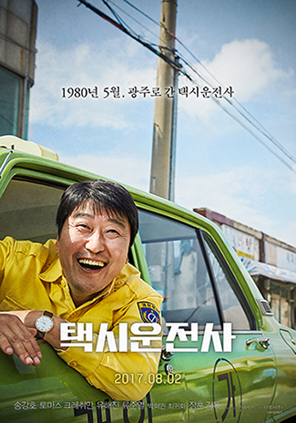
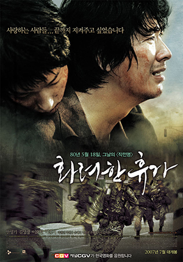

A well-known film that deals with the May 18 Democratization Movement is *A Taxi Driver*. It follows the story of Jürgen Hinzpeter, a foreign journalist who covered the events in Gwangju. The film was highly well-received by the public, drawing an audience of over ten million viewers.

"May 18"(for literal translation, its "Splendid Holiday") is also an important film that deals with this. This film covers the unfolding of the May 18 Democratization Movement and the atrocities committed by the martial law troops.